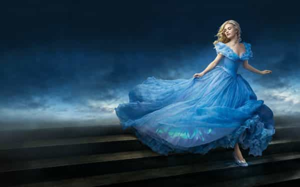
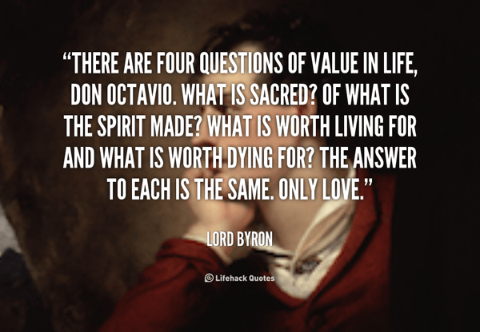
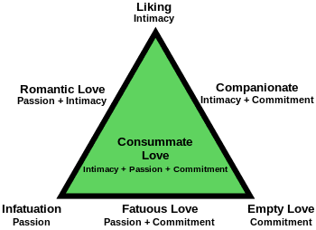
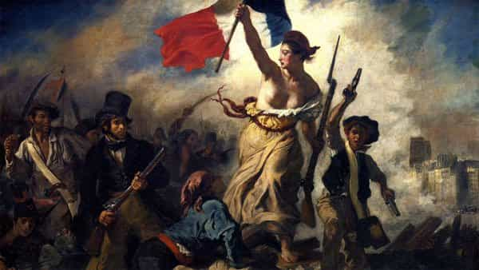

Daryush "Roosh" Valizadeh created ROK in October 2012. You can visit his blog at RooshV.com or follow him on Twitter and Facebook.


Since we were children, we have been bombarded with propaganda that romantic love is the ultimate relationship ideal. Hollywood movies, Disney cartoons, and literary fiction all portray romantic love as an absolute necessity in any wedding union, but how much of that narrative has been a lie? Is it possible that our pursuit of romantic love is actually preventing us from forming a lifelong pair bond?
I began to question the notion of romantic love when thinking about its emotional root. Love is a fleeting emotion, and like all emotions, it comes and goes like the clouds in the sky. Why have I been taught to select my life partner based on an emotion? I’m surely not encouraged to use emotion when buying a house, applying for a job, or doing my personal finances, but when it comes to choosing a human being that I’m supposed to spend the rest of my life with, I’m advised by the establishment narrative to use emotion for the biggest decision of them all.
Another major clue that romantic love is a childish strategy for choosing mates is the fact that countries with arranged marriages, where partners are picked based on purely practical matters, have lower divorce rates that in countries where romantic love is used to select mates (1, 2, 3). While there are multiple reasons for divorce in any society, it is rather coincidental that the countries most impacted by notions of romantic love happen to have the highest divorce rates.

It turns out that your desire to use love as a precondition for marriage or pair bonding is an invented construct that had roots in destroying tradition and theistic authority. Romanticism, a movement that began in the 18th century, put romantic love at the forefront, not just for individuals but nations as well, all from a central thesis of individualism. It wanted you to take the focus away from boring old rules and traditions to focusing on how you feel.
The movement came primarily from bourgeois youth, who used family money to fiddle away on idealistic writings.
…the Romantic Movement was nothing more than a protest against bourgeois conventions, bourgeois society and morality. To be extreme and flamboyant and unusual and violent even at the risk of becoming grotesque was the desire of every young Romantic. The Romantics were, in fact, bourgeois origins, who were trying hard to escape from their own shadows. (Source)
[…]
Romantics believed that men and women ought to be guided by warm emotions rather than the cold abstract rules and rituals established by Bourgeois society. (Source
They sound a lot like modern day social justice warriors, many of whom are trust fund babies that lash out against “privilege” and “inequality” to relieve the psychological pain of being wealthy without having had to earn it. Combined with the fact that SJWs also trump feelings over logic, it’s clear to see how romanticists were proto-SJWs, whose individualistic ideas are just what the enlightenment needed to complete its destruction of tradition.

Prior to the romantic era, companionate love was the relationship form often described in literature and other historical writings.
Passionate love is the arousal-driven emotion which often gives people extreme feelings of happiness, and can also give people feelings of anguish. Companionate love is the form which creates a steadfast bond between two people, and gives people feelings of peace. Scientists have described the stage of passionate love as “being on cocaine,” since during that stage the brain releases the same neurotransmitter, dopamine, as when cocaine is being used. (Source)
Besides Song Of Songs in the Old Testament, writers were not encouraged to muse endlessly about passionate love, and there is zero evidence it was used as the principal factor in forming new marriages, but it’s this passionate love that we’re told to strive for, of feeling like you’ve been swept up in an exciting whirlwind, before publishing the gory details on Buzzfeed or in a bestseller like Eat Pray Love, authored by a woman who is embarking on her second divorce.
Women of the romantic era played a big part in elevating romantic love, and why wouldn’t they? It’s much more fun to get swept up in the excitement created by non-committal alpha male than it does to do arduous daily duties before you husband, king, and God. Women were given the chance to pick between excitement or responsibility, and we know what they have chosen.
The works of the Romantic Era also differed from preceding works in that they spoke to a wider audience, partly reflecting the greater distribution of books as costs came down during the period. The Romantic period saw an increase in female authors and also female readers. (Source)
Jewish psychologist Robert Sternberg proposed the popular triangular theory of love, which is often used today as defining the love ideal. This theory has caused immense harm for stating that all three forms of love are needed in equal measure for a successful relationship.

Anyone who takes an introductory psychology course, or who reads a pop psychology book, will be exposed to this theory, and walk away thinking that passion is absolutely required in a relationship. If it’s not there, the presumption is that the relationship is no longer “consummate” and far short of ideal.
Believing that romantic love and passion are necessary in a marriage makes it that much easier to exit out of it, because when a woman no longer “feels passion,” she will walk away knowing that experts like Sternberg would agree that the relationship degraded and was no longer worth saving. And this is exactly what modern women are doing in droves. They have shown an appalling disregard for their wedding vows, especially upon realizing that they initiate 80% of divorces.

If nationalism came out of the romantic era, and passionate love was a mistake, does that mean nationalism is also a mistake?
One of Romanticism’s key ideas and most enduring legacies is the assertion of nationalism, which became a central theme of Romantic art and political philosophy. From the earliest parts of the movement, with their focus on development of national languages and folklore, and the importance of local customs and traditions, to the movements that would redraw the map of Europe and lead to calls for self-determination of nationalities, nationalism was one of the key vehicles of Romanticism, its role, expression and meaning.
[…]
Patriotism, nationalism, revolution and armed struggle for independence also became popular themes in the arts of this period. (Source)
Upon closer inspection, it’s easy to see that the ruling agenda of today, globalism, is essentially “world nationalism.” Instead of loving your neighbor, and only those who share your unique traditions or race, you’re supposed to love everyone in the world, because it’s evil to think that there are large differences between a German businessman in a Hugo Boss suit and a Tutsi villager with a lip plate the size of a grapefruit.
The romantic ideal of nationalism is not Adolph Hitler, but George Soros, who insists on loving everyone in the world from the depths of your heartfelt human compassion. A nationalism based on genetics and local bonds will no doubt serve citizens better than a “global nationalism” where you’re supposed to care for those who are nothing like you.
It’s clear that using romantic love and passion as your primary standard for long-term relationships will lead to failure and maybe even personal catastrophe. You’ll easily come to this conclusion by evaluating your past relationships and the mistakes you’ve made on women who you had intense passion for.
Instead, practicality must be the order of the day. You must logically evaluate any woman you intend to be with for more than a casual relationship by weighing her values, beliefs, and sexual history. This is easier said than done because we’ve been so brainwashed to believe passion is important, but it simply makes the most amount of sense. Find a woman the same way you would find a new job or buy a new house, and be wary of women who picked you based more on passion than practical matters.
It may sound cold to search for your wife like you would a business partner, but that is exactly what she is. The day-to-day life of a family home is far more business and economics than love, and so you should come to the easy conclusion that that’s what you must use to form a stable home.
Understand, however, that we do not live in a traditional and patriarchal society that aids us in our search for a virtuous woman. Instead, society is encouraging women to corrupt themselves, sexually and physically, in the name of empowerment and independence, making our search exceedingly difficult. This is one of the costs we have to pay for living in the modern world. Some men will be able to overcome it, but many men won’t, and will fail in their search for a woman they can create a family with.
But at least we are now armed with the knowledge of what it takes to have a more successful long-term relationship. It’s not romantic love or butterflies in the stomach, but a matter of practicality. Logically evaluate her past, her values, and her beliefs to make sound predictions of how she’ll behave in the future. From this evaluation will come a logical decision that is likely to endure, instead of relying on emotion, which changes as readily as the direction of the wind.
This article was originally published on Roosh V.